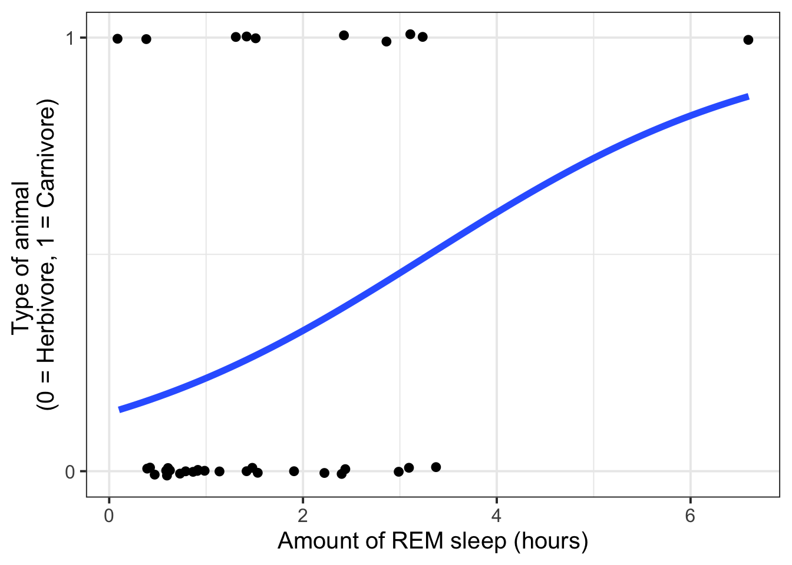
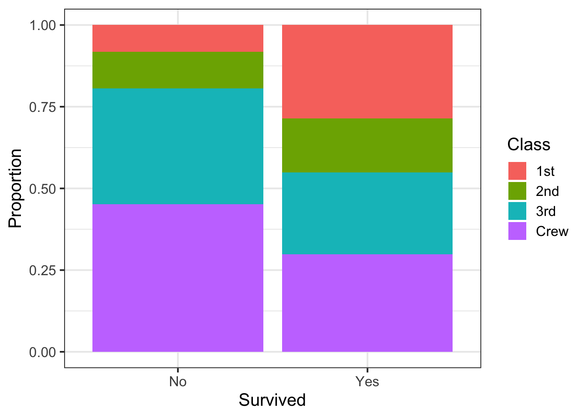
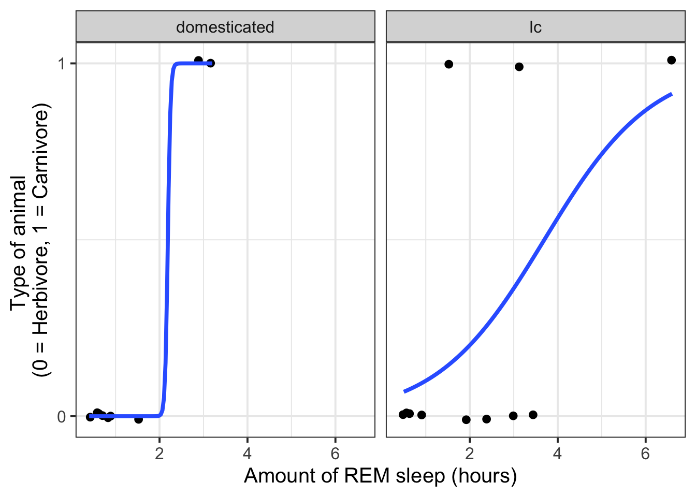
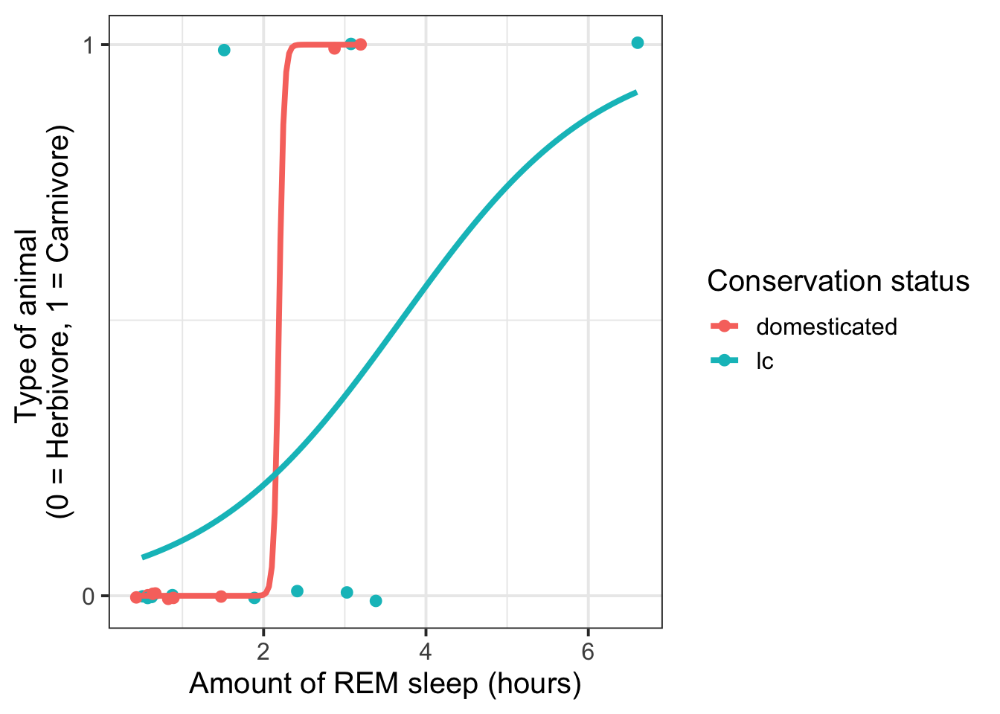
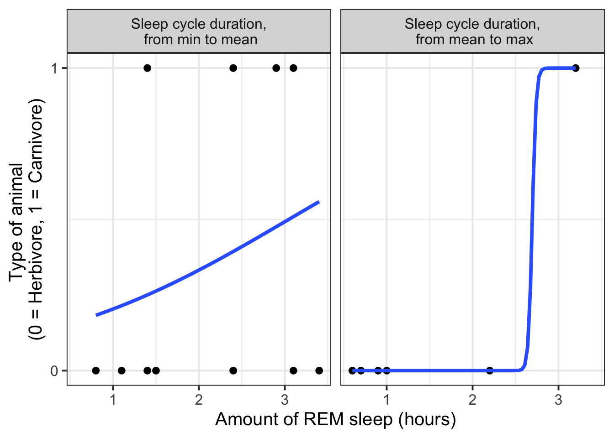
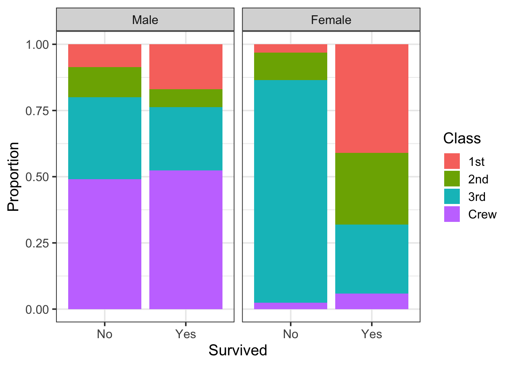
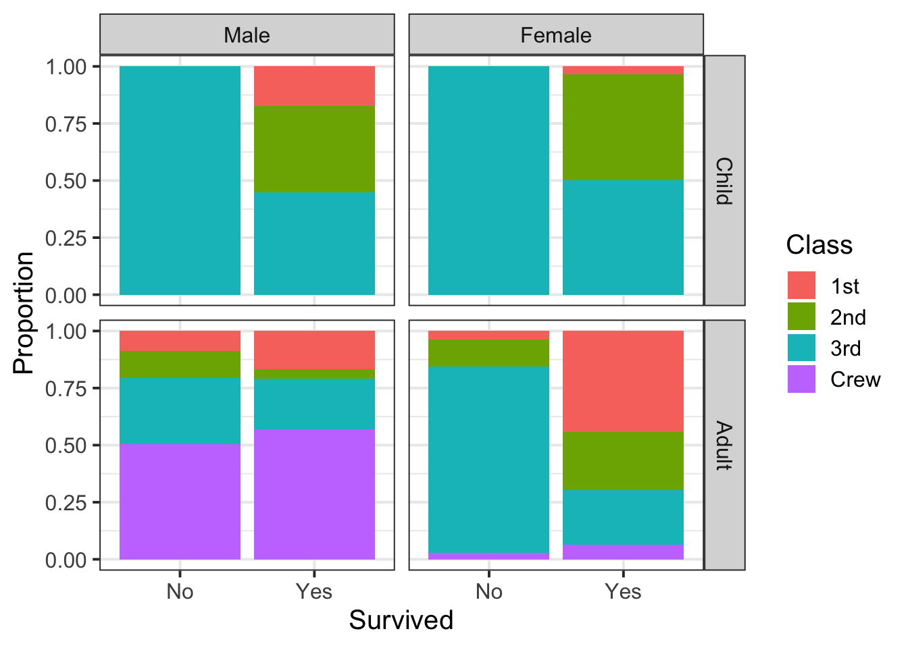

library(effects)Plotting binary outcome data
This flash card is a gallery of different ways you might plot binary outcome data, depending on what kinds of predictors you have.
For all plots, we’ll use Effect() from the effects package.
One continuous predictor
TipThe
msleep data
The msleep dataset from ggplot2 records the amount of sleep of different mammals, along with other information about each species. We’ll only look at what predicts whether a mammal is a carnivore rather than a herbivore.
msleep <- msleep |>
filter(
vore %in% c('herbi', 'carni')
) |>
mutate(
carnivore = ifelse(vore == 'carni', 1, 0)
)
head(msleep)# A tibble: 6 x 12
name genus vore order conservation sleep_total sleep_rem sleep_cycle awake
<chr> <chr> <chr> <chr> <chr> <dbl> <dbl> <dbl> <dbl>
1 Cheetah Acin~ carni Carn~ lc 12.1 NA NA 11.9
2 Mounta~ Aplo~ herbi Rode~ nt 14.4 2.4 NA 9.6
3 Cow Bos herbi Arti~ domesticated 4 0.7 0.667 20
4 Three-~ Brad~ herbi Pilo~ <NA> 14.4 2.2 0.767 9.6
5 Northe~ Call~ carni Carn~ vu 8.7 1.4 0.383 15.3
6 Dog Canis carni Carn~ domesticated 10.1 2.9 0.333 13.9
# i 3 more variables: brainwt <dbl>, bodywt <dbl>, carnivore <dbl>Visualise how likely an animal is to be a carnivore as a function of hours of REM sleep:
msleep |>
ggplot(aes(x = sleep_rem, y = carnivore)) +
geom_jitter(height = 0.01) +
scale_y_continuous(breaks = c(0, 1)) +
geom_smooth(method = "glm", method.args = list(family = binomial), se = F, linewidth = 2) +
labs(
y = 'Type of animal \n(0 = Herbivore, 1 = Carnivore)',
x = 'Amount of REM sleep (hours)'
) +
NULL
^ a good illustration of how one data point can really influence a model!
One categorical predictor
TipThe
Titanic data
The Titanic dataset from the package datasets records the survival of passengers on the Titanic by age (child or adult), sex (male or female), and class (1st, 2nd, 3rd, and Crew).
Titanic <- Titanic |>
as.data.frame() |>
uncount(Freq)
Titanic |> head() Class Sex Age Survived
1 3rd Male Child No
2 3rd Male Child No
3 3rd Male Child No
4 3rd Male Child No
5 3rd Male Child No
6 3rd Male Child NoVisualise proportion of each passenger class aboard the Titanic that survived:
Titanic |>
ggplot(aes(x = Survived, fill = Class)) +
geom_bar(position = 'fill') +
labs(
y = 'Proportion'
)
One continuous and one categorical predictor
Tip: If you have a continuous predictor, it’s a good idea to put that on the x axis. Then you can use facets or colours to distinguish the levels of the categorical predictor.
Visualise carnivore vs. herbivore status as a function of amount of REM sleep, dividing for different conservation statuses (domesticated and lc = least concern).
Using facets:
msleep |>
filter(conservation %in% c('lc', 'domesticated')) |> # filter for ease of visualisation
ggplot(aes(x = sleep_rem, y = carnivore)) +
geom_jitter(height = 0.01) +
scale_y_continuous(breaks = c(0, 1)) +
geom_smooth(method = "glm", method.args = list(family = binomial), se = F) +
labs(
y = 'Type of animal \n(0 = Herbivore, 1 = Carnivore)',
x = 'Amount of REM sleep (hours)'
) +
facet_wrap(~ conservation) 
Using colour:
msleep |>
filter(conservation %in% c('lc', 'domesticated')) |> # filter for ease of visualisation
ggplot(aes(x = sleep_rem, y = carnivore, colour = conservation)) +
geom_jitter(height = 0.01) +
scale_y_continuous(breaks = c(0, 1)) +
geom_smooth(method = "glm", method.args = list(family = binomial), se = F) +
labs(
y = 'Type of animal \n(0 = Herbivore, 1 = Carnivore)',
x = 'Amount of REM sleep (hours)',
colour = 'Conservation status'
)
Two continuous predictors
It’s not easy to show how a binary outcome changes as a function of two continuous predictors.
For multiple regression models, it suffices to plot each predictor against the outcome on its own, and then to use patchwork to join the plots to create a single figure.
For interaction models, where it is important to see how one variable’s effect might depend on the other variable, then using cut() to divide one variable into discrete chunks and then treat it as a categorical variable is probably the nicest way (though still a bit awkward, since the data being visualised appears different from the data being modelled).
msleep |>
mutate(
sleep_cycle_bin = cut(
sleep_cycle,
# define the cut points
breaks = c(
min(sleep_cycle , na.rm = T), # the bottom cut point = the min
mean(sleep_cycle, na.rm = T),
max(sleep_cycle , na.rm = T) # the top cut point = the max
),
include.lowest = TRUE,
# label each interval between the cut points
labels = c(
'Sleep cycle duration,\n from min to mean',
'Sleep cycle duration,\n from mean to max'
)
)
) |>
filter(!is.na(sleep_cycle_bin)) |> # drop any NAs in this column
ggplot(aes(x = sleep_rem, y = carnivore)) +
facet_wrap(~sleep_cycle_bin, nrow = 1) +
geom_point() +
geom_smooth(method = "glm", method.args = list(family = binomial), se = F) +
scale_y_continuous(breaks = c(0, 1)) +
labs(
y = 'Type of animal \n(0 = Herbivore, 1 = Carnivore)',
x = 'Amount of REM sleep (hours)'
)
Two (or more) categorical predictors
Visualise proportion of each passenger class that survived, faceting by sex:
Titanic |>
ggplot(aes(x = Survived, fill = Class)) +
geom_bar(position = 'fill') +
labs(
y = 'Proportion'
) +
facet_wrap(~ Sex)
Visualise proportion of each passenger class that survived, faceting by sex and age:
Titanic |>
ggplot(aes(x = Survived, fill = Class)) +
geom_bar(position = 'fill') +
labs(
y = 'Proportion'
) +
facet_grid(Age ~ Sex)